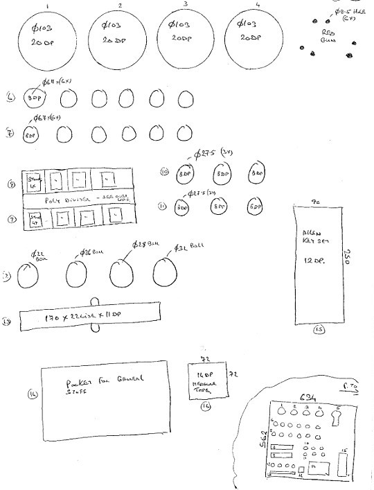
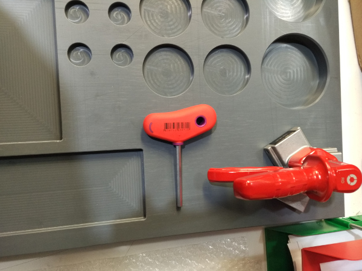
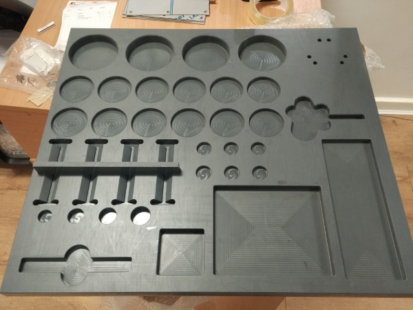
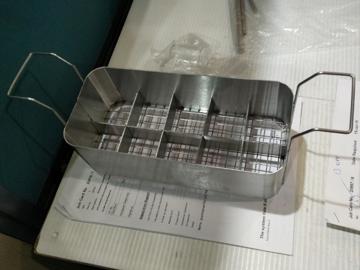
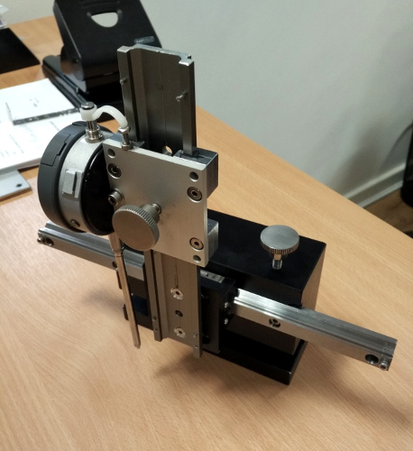
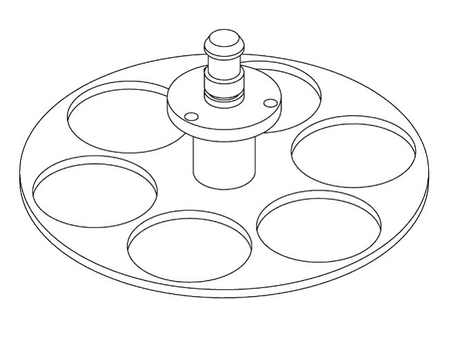

Platforma z regulowaną wysokością
Platforma została wykonana dla klienta związanego z przemysłem chemicznym. Wykonałem modele 3D oraz dokumentację 2D zgodnie z wymaganiami klienta. Po akceptacji wykonaliśmy poprawne urządzenie. Dokumentacja została wykonana w środowisku Solid Works.


Płyta cieni dla szafki narzędziowej
Nasz klient potrzebował płyty cieni dla szafki narzędziowej. Użyliśmy szarego PVC do tego projektu. Wykonałem prototyp płyty z przykładowym ułożeniem narzędzi. Po akceptacji klienta wykonałem model 3D, zamówiłem materiał i wykonałem kartę technologiczną.





Prototyp koszyka na próbki
Ten koszyk został wykonany dla laboratorium chemicznego w firmie związanej z przemysłem farmaceutycznym. Od klienta dostałem tylko szkic. Wykonałem dokumentację 3D oraz 2D. Spawacz wykonał koszyk zgodnie z dokumentacją.



Uchwyt sprężysty do kamery
Rysunek złożeniowy uchwytu jest pokazany poniżej. Część została wykonana na frezarce numerycznej.


Wózek ślizgowy
Wykonałem projekt tego wózka który przeznaczony jest do większej maszyny. Do tej jednostki wykorzystałem prowadnice liniowe firmy Rexroth. Po akceptacji klienta wykonałem dokumentację 2D. Załoga wykonała i złożyła urządzenie zgodnie z wykonaną dokumentacją.


Klips do pudełka
Klient wysłał prototypy klipsa wykonane na drukarce 3D (różowe części). Po kilku modyfikacjach wykonałem końcowy projekt oraz dokumentację 2D i 3D. Klient zamówił 1000 klipsów które wykonaliśmy na frezarce 3D. Do wykonania części został wykorzystany niebieski Delrin.


Płyta cieni dla narzędzi
Klient wysłał kilka typowych narzędzi. Wykonałem model płyty cieni oraz plik .dxf dla środowiska Mastercam. Na koniec płyta została wykonana z szarego PVC.


Regulowany uchwyt na stopy
Te uchwyty służą pracownikom w laboratorium chemicznym (cleanroom). Wszystkie elementy zostały wykonane z termoplastów o wysokiej odporności chemicznej oraz stali nierdzewnej. Wykonałem model 3D, zamówiłem materiały i wykonałem proces technologiczny dla 20 urządzeń.


Uchwyt na kasety
Ten uchwyty jest przeznaczony na nowe detale na lini produkcyjnej. Jest kombinacją poliacetalu i stali nierdzewnej. Zgodnie z uwagami klienta wykonałem projekt oraz modele 3D. Po akceptacji zamówiłem materiał i wykonałem proces technologiczny.


Urządzenie z czujnikiem zegarowym
Urządzenie używane jest do mierzenia części w dziale jakości. To urządzenie wykonane zostało z różnych materiałów. Oś X została wykonana z prowadnicy firmy Bosch natomiast oś Z z prowadnicy firmy IGUS. Elektroniczny czujnik zegarowy firmy Mitutoyo zapewnia precyzję pomiaru. Wykonałem projekt tego urządzenia. Po akceptacji klienta wykonałem kompletną dokumentację. Klient był bardzo zadowolony z wykonanego prototypu.



Podajnik na podstawie wzoru
Część ta została wykonana ze stali nierdzewnej. Wykonałem projekt tego podajnika na podstawie zużytej, starej części.
